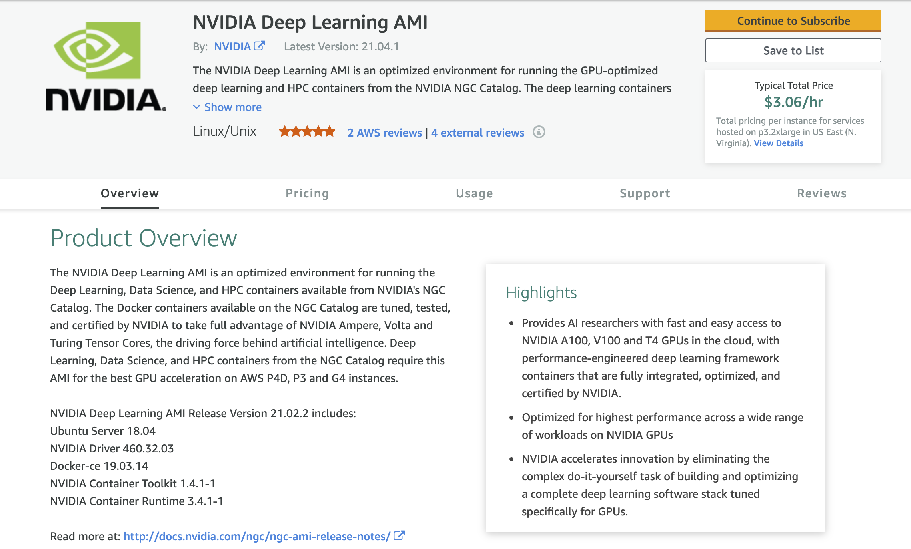

Custom Images for Runner¶
You can use custom images for your runners as well. One use case for that is you want pre installed packages.
AWS Custom AMI¶
One of the most common applications of Cirun is the ability to run CI on a GPU enabled machine and for running GPU tests it’s good to have nvidia drivers pre-installed.
AWS Marketplace has many such useful images, which can help make your CI faster.
NVIDIA Deep Learning AMI¶
Let’s take an example of using an NVIDIA Deep Learning AMI for GPU enabled runners.
To use any AMI (Amazon Machine Image) in your .cirun.yml, you need two things:
Note
The AMI ID for the runner in that region (default region is
eu-west-1).Accept Terms and condition for the AMI.
Here are the steps to achieve the above.
Go to AWS Marketplace and Search for “NVIDIA Deep Learning AMI”.
In the search results click on the “NVIDIA Deep Learning AMI”.

Click on “Continue to Subscribe” on the top right to accept terms and condition. (You need to be logged in to your AWS account for this). You should see the following page after subscribing.

Click on “Continue to configuration” button on the top right.

Here you can see the Ami Id of the image, which now you can use in your
.cirun.ymlas following:machine_image: ami-00ac0c28c01352e53 region: eu-west-1 # this is default region anyways (only required if using an AMI ID from different region)

In the above photo we can see the AMI ID for “NVIDIA Deep Learning AMI” in the Ireland region (eu-west-1).
Note
Pricing: This AMI is free to use, the pricing you see on the right is the price for the instance not for the AMI.
AWS Marketplace NVIDIA Deep Learning AMI .cirun.yml¶
Note
It is important to accept terms and conditions of the AMI you want to use, using the process described above, otherwise you’ll not be able to provision the runner.
# Self-Hosted Github Action Runners on AWS via Cirun.io
# Reference: https://docs.cirun.io/reference/yaml.html
runners:
- name: gpu-runner
# Cloud Provider: AWS
cloud: aws
instance_type: g4dn.xlarge
# NVIDIA Deep Learning AMI from AWS Marketplace
# https://aws.amazon.com/marketplace/pp/prodview-e7zxdqduz4cbs
machine_image: ami-00ac0c28c01352e53
# preemptible instances seems quite less reliable.
preemptible: false
# Path of the relevant workflow file
workflow: .github/workflows/test.yml
# Number of runners to provision on every trigger on Actions job
# See .github/workflows/build-gpu.yml
count: 1
AZURE Custom Images¶
For making custom images in azure user needs to just capture an existing VM and create the image in a resource group.
Nginx Ubuntu custom image¶
Let’s take an example of how to create a custom image on azure. We will make a ubuntu image with Nginx pre-installed. Then we will create a VM using this custom image. Here are the steps to achieve the above.
Create a ubuntu VM in a new or existing resource group from the Azure dashboard.
SSH into the VM and install Nginx using.
sudo apt install nginx
Now capture the VM using the capture button inside the VM. “For Share image to Shared image gallery” option select “No, capture only a managed image”.
Also, tick the checkbox having the option “Automatically delete this virtual machine after creating the image”.
Change the name of VM and click on review and create.
After the image has been created go to the resource group in which you have created the image. Your image will be present here.
To list all custom images using azure CLI use
az image list
The above command shows all the custom images available on your azure. It also shows “id” for all custom images. This is the parameter we use to make VM with a custom image.
AZURE custom image vm .cirun.yml¶
The .cirun.yml for above custom image will look like
# Self-Hosted Github Action Runners on AZURE via Cirun.io
# Reference: https://docs.cirun.io/reference/yaml.html
runners:
- name: azure-runner
# Cloud Provider: AZURE
cloud: azure
instance_type: Standard_DS1_v2
machine_image:
# myResourceGroup is the name of the resource group in which the image is present, myCustomImage is the name of the image
# use az image list in azure CLI to know your image id
id: /subscriptions/d74a1d71-99ffab4a5/resourceGroups/myResourceGroup/providers/Microsoft.Compute/images/myCustomImage
# preemptible instances seems quite less reliable.
preemptible: false
# Path of the relevant workflow file
workflow: .github/workflows/test.yml
# Number of runners to provision on every trigger on Actions job
count: 1